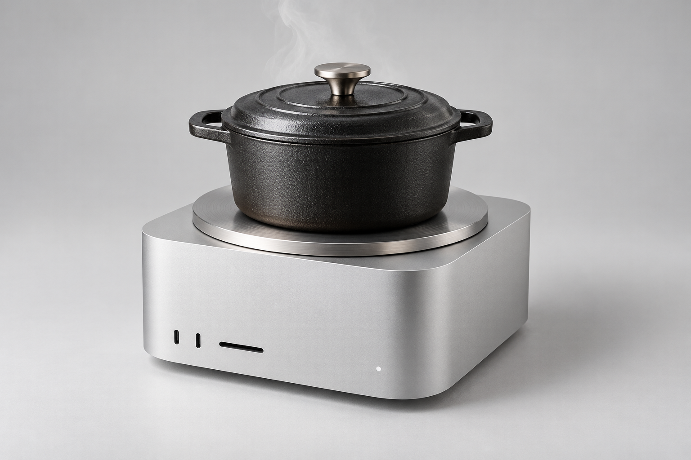
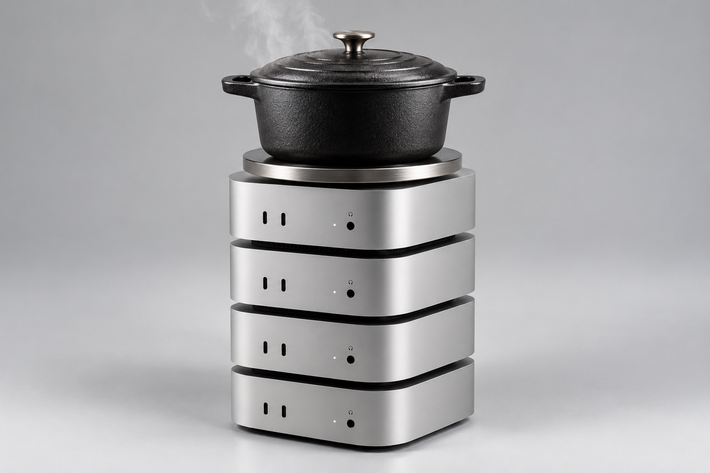
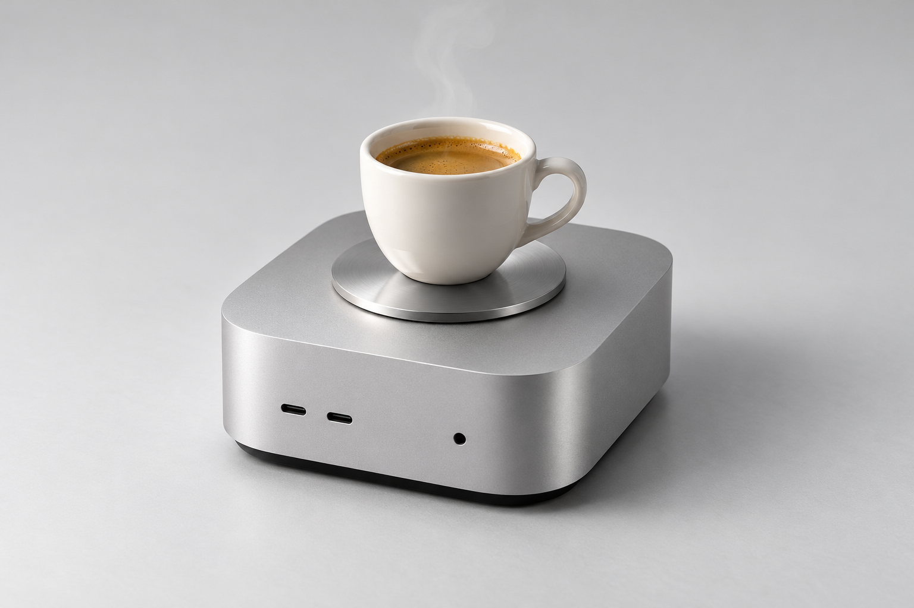
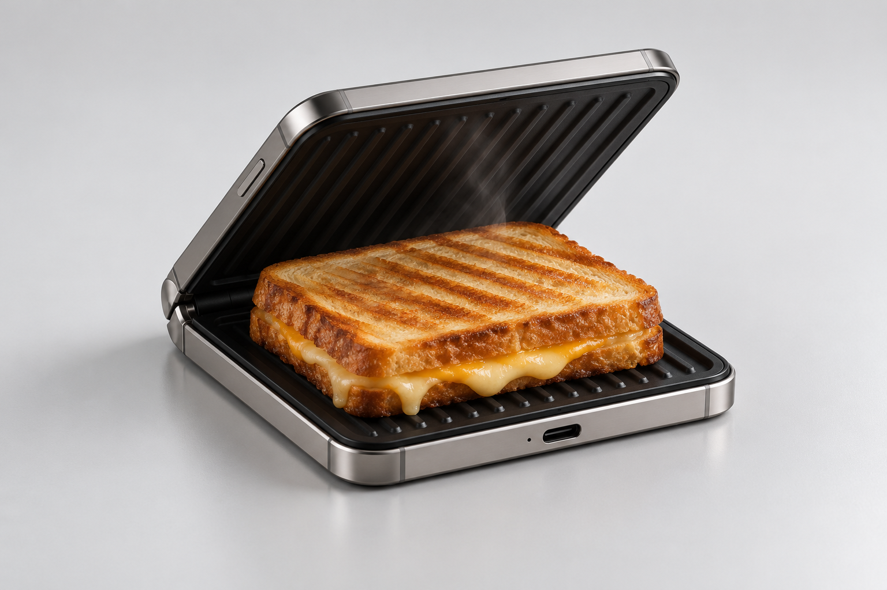
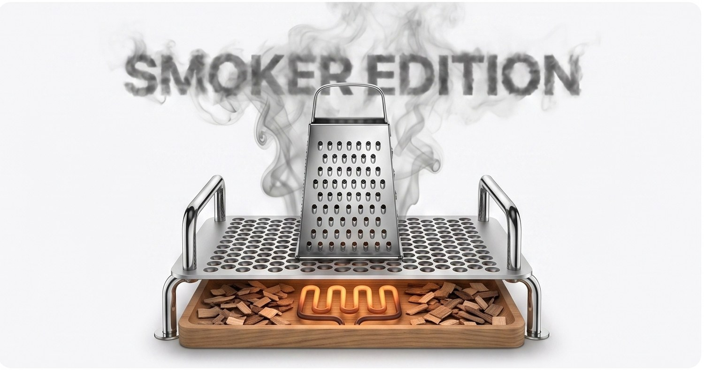

Kollektion 2026
MacSlowCooker Cooking Plate
M5 Ultra. Lokal geschmort.
Mac Studio · M5 Max / M5 Ultra
Ein fiktives Küchen-Upgrade für den Mac Studio mit M5 Max oder M5 Ultra. Ein lokales LLM plant das Abendessen, oben steht in unserer Vorstellung ein Bräter. Die Inferenz ist echt, das Kochen erfunden.

Cluster Edition
Mac mini × 4 · M6 / M5 Pro

Vier Mac mini mit M6 oder M5 Pro. Eine Cooking Plate. Je ein Agent für Planung, Einkauf, Vorbereitung und Abschmecken. Vier Computer, trotzdem nur ein Topf.
Brew Stand mini
Mac mini · M6 / M5 Pro

Ein Brew Stand für eine Tasse, passend zum kompakten Mac mini mit M6 oder M5 Pro. Die KI-Agenten bleiben aktiv, der Kaffee bleibt eine Tasse. Die Warmhaltefunktion ist frei erfunden.
Duo Press
iPhone Duo · Konzept
Aufklappen: iPhone. Zuklappen: Frühstück.

Fiktive Grillplatten für die Innenseite des iPhone Duo. Einmal zuklappen, goldbraun in den Tag starten. Ein Konzept, das aus einem faltbaren Smartphone einen Sandwichmaker macht.
- True Toast
- Dein Toast. Deine Bräune.
- Bereit für AirDrop
- Rezepte verschicken? Ja. Die Füllung? Nein.
Brot, Käse und iPhone separat erhältlich.
Inspiriert von: Apple — iPhone Duo
Mac Pro Smoker Edition

Smoker Edition — Ihre Käsereibe, endlich verwirklicht. Die Mac Pro-Gehäuseperforationen werden zum Kalträucher-Schornstein; eine Holzspan-Schublade am Boden liefert den Rauch. Kalt geräucherter Lachs-Bereich, kein BBQ. Kein echtes Produkt.
MacSlowCooker T-Shirt — Cooking Plate

Cooking-Plate-T-Shirt — tragbare Inferenz. Mac-Studio- und Bräter-Illustration in tiefer Tinte auf einem 180-g/m²-Naturmelange-T-Shirt. Hardware auf dem Bügel.
Woher der Witz kommt
Während der Entwicklung von MacSlowCooker — einer echten macOS-App, die GPU-Auslastung im Dock als Kochtopf visualisiert — heizte das Ausführen lokaler LLM-Inferenz auf einem Mac Studio M3 Ultra das Gehäuse so stark auf, dass der Witz "könnte man darauf eigentlich kochen?" immer wieder aufkam.
Die Kollektion 2026 überträgt den Witz auf den neuen Mac Studio und Mac mini. Echt sind die Macs und die Monitoring-App. Die Küchengeräte existieren nur in diesem Konzept.
Echte Macs. Erfundenes Kochstudio.
Die Modellkonfigurationen entsprechen Apples Ankündigungen vom 25. August 2026; geprüft am 19. Oktober 2026.
Diese Seite enthält keine Messwerte für Oberflächentemperatur oder Aufheizzeit der neuen Modelle. Die früheren „65 °C / etwa 8 Minuten“ sind keine Spezifikation aktueller Macs. Die Produktbilder sind generierte Konzeptbilder.
Bitte nicht wirklich machen
Heißes Kochgeschirr, Flüssigkeiten oder hitzeempfindliche Dinge auf einen aktiven Computer zu stellen ist eine schlechte Idee. Die Oberseite des Mac Studio ist Aluminium, aber der Luftstrom ist kritisch, um den SoC unter den Wärmegrenzen zu halten. Ihn zu blockieren verkürzt die Lebensdauer der Maschine und kann die Garantie erlöschen lassen.
Weiterlesen
- MacSlowCooker (GitHub)
- 「GPU で料理しよう。MacSlowCooker」 — Ausführlicher Artikel (auf Japanisch)
- MacSlowCooker Supportseite